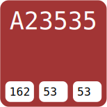
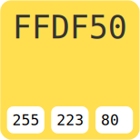
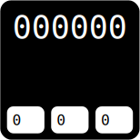
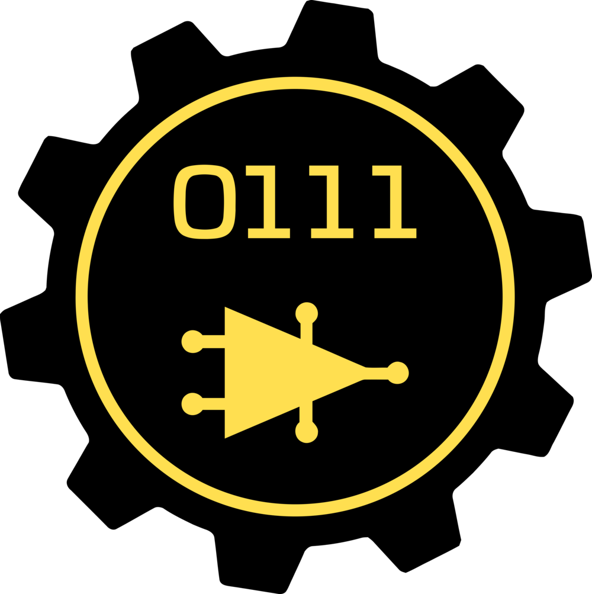

Branding
Our Style Guidelines
Official Colors
Below are the three official colors for Rho Beta. The two main colors are Ruby (Primary) and Yellow (Secondary). Black may be used to as a background when appropriate.
Primary
Secondary
Background



Note: Due to inconsistencies in computer monitors/screens and printers, the colors depicted may not match the actual colors. Please use the html and/or sRGB numbers below when possible.
Logos
Main Logo
